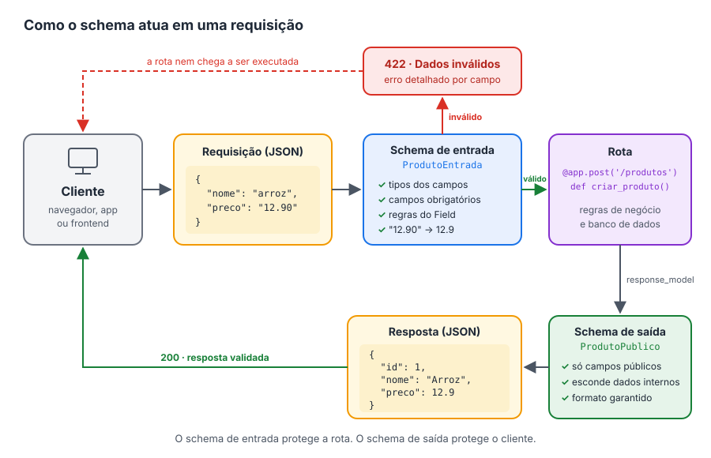

Schemas¶
O Schema é um recurso muito importante, quando falamos de API. Porque são classes que descrevem o formato dos dados que entram e saem dentro de uma API. Nesse nosso projeto vamos utilizar a biblioteca do Pydantic que já é integrada com o FastAPI.
Um schema funciona como um contrato: ele diz quais campos existem, de que tipo são e quais são obrigatórios.
Utilizando esses recursos, podemos deixar nossa API muito poderosa, melhorando a confiabilidade, a consistência e a usabilidade, deixando a compreensão clara.
Abaixo os recursos que podemos fazer com os schemas.
-
Tipo de dados - (Podemos definir qual o tipo de dados pode entrar ou sair, podendo ele ser strings, números, datas, booleanos, etc)
-
Relações entre elementos de dados - (É a forma como os campos e os schemas se ligam entre si)
-
Campos obigatórios e opcionais ( Podemos definir quais são os itens que devem ser informados e quais são opcionais, como isso não precisamos fazer tratamento de erros ou validações o próprio pydantic e o FastAPI, já validam antes).
-
Regras de validação (formatar campos, datas, intervalos, mascaras (CNPJ, CPF))

Sabendo da importância do schema, vamos aplica-lo agora na nossa API, com a nossa primeira rota já criada.
Importante
Como o projeto vai crescer, vamos criar um diretório só para guardar e organizar os nossos schemas.
Importante
Outro detalhe importante, que talvez não tenho falado antes, como estou utilizando a biblioteca poetry para gerenciar todos os meus pacotes e instalações, automáticamente ele cria o diretório src, onde fica os arquivos do python da API.
Observe que temos nosso diretório Schemas e dentro dele o arquivo app.py, eu costumo deixar como o mesmo nome o schema para referenciar o arquivo da api (Mas você pode ficar a vontade para colocar outro nome)
Nosso primeiro schema¶
Vamos escrever nosso primeiro schema. Abra o arquivo abaixo no seu editor e digite o código:
| src/comprix/schemas/app.py | |
|---|---|
-
Linha 1: importamos a classe
BaseModelda biblioteca Pydantic. Ela é a base de todos os schemas: é ela que traz a validação dos dados e permite que o FastAPI gere a documentação automaticamente. -
Linha 4: criamos a classe
Message, que será o nosso schema. Ao colocarBaseModelentre parênteses, dizemos queMessageherda deBaseModel, ou seja, ganha todos os recursos de validação do Pydantic sem precisarmos escrever nada a mais. -
Linha 5: definimos o único campo do schema:
message, do tipostr(texto). Isso significa que todo dado que usar esse schema precisa ter um campomessage, e o valor dele precisa ser um texto.
Por que não existe um __init__?
Em uma classe Python comum, precisaríamos escrever o método __init__ para receber os valores. Com o BaseModel, basta declarar os campos com seus tipos que o Pydantic cria tudo isso por nós.
Usando o schema na rota¶
Agora vamos dizer para a nossa rota que a resposta dela segue o formato do schema Message, e também qual código de status ela devolve quando dá tudo certo:
| src/comprix/app.py | |
|---|---|
-
Linha 1: importamos o
HTTPStatus, que já vem com o Python. Ele reúne todos os códigos de status HTTP com nomes legíveis: em vez de escrever o número200, escrevemosHTTPStatus.OK, o que deixa o código mais fácil de entender. -
Linha 5: importamos o schema
Messageque acabamos de criar. Repare que o caminho começa emcomprix, e não emsrc: a pastasrcsó guarda o nosso pacote, ela não faz parte do nome dele. -
Linha 10: na definição da rota, passamos dois parâmetros novos:
status_code=HTTPStatus.OK: informa que, quando tudo der certo, a rota responde com o código 200 (OK).response_model=Message: informa que a resposta sempre segue o formato do schemaMessage. A partir de agora, o FastAPI:- valida a resposta: se a função devolver algo sem o campo
message, ocorre um erro; - filtra a resposta: qualquer campo que não esteja no schema é removido antes de chegar ao cliente;
- documenta a resposta: o formato aparece no
/docs.
- valida a resposta: se a função devolver algo sem o campo
Códigos de status mais comuns
| Código | HTTPStatus |
Significado |
|---|---|---|
| 200 | HTTPStatus.OK |
Deu tudo certo |
| 201 | HTTPStatus.CREATED |
Um registro foi criado |
| 204 | HTTPStatus.NO_CONTENT |
Deu certo, mas não há conteúdo para devolver |
| 404 | HTTPStatus.NOT_FOUND |
O recurso não foi encontrado |
| 422 | HTTPStatus.UNPROCESSABLE_ENTITY |
Os dados enviados são inválidos |
Veja na documentação
Rode o servidor com poetry serve e acesse http://127.0.0.1:8000/docs. Na rota GET /, a seção Responses agora mostra o código 200 com o formato da resposta, e o schema Message aparece na seção Schemas, no fim da página.